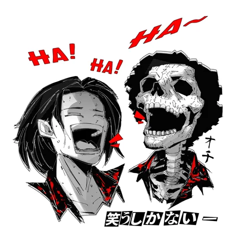
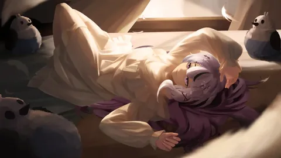
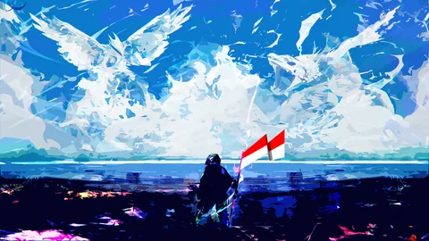
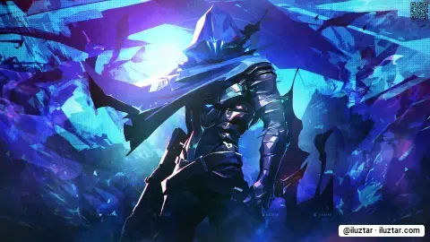
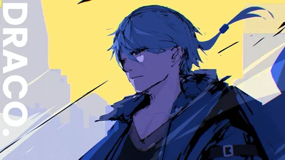
This is Iluztar





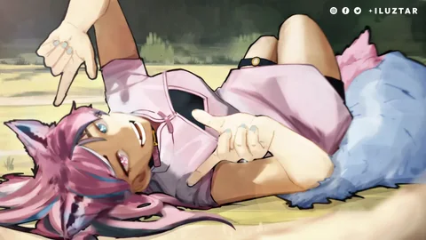
This is Iluztar, a creative studio based in Bandar Lampung, Indonesia, built by artists, for artists, since 2023.
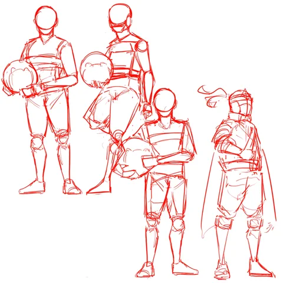
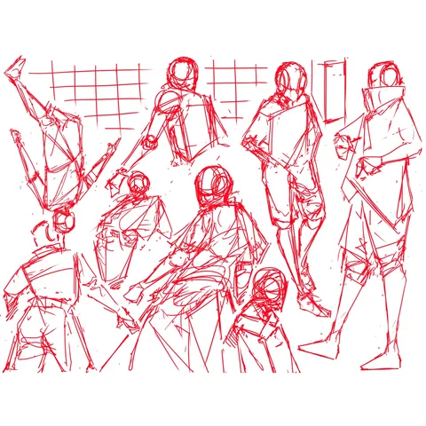
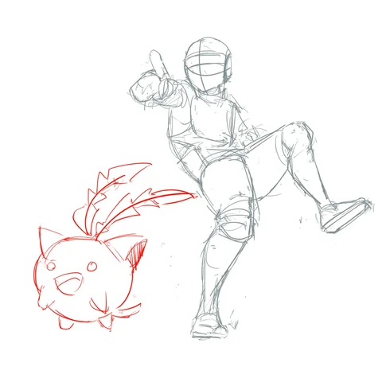
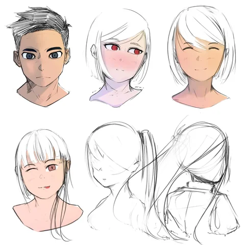
Got a project that's growing faster than you can handle? Tight deadlines, unfinished sketches, and too many things on your plate?
We got you.
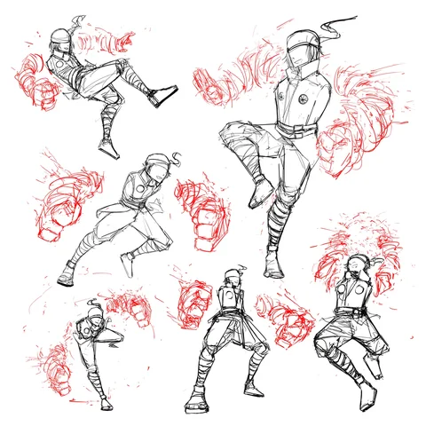
01 · Sketch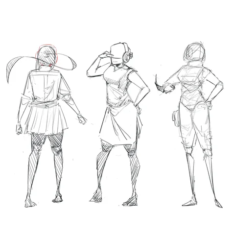
02 · Line-art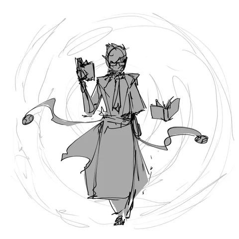
03 · Base ColorWhether it's a full commission or just an extra pair of hands (sketch, lineart, or base color), we've got you covered.
Big project or a single task, we treat every piece with the same care, precision, and attention to detail.
From the first sketch to the final render, we handle the workload so you can keep the vision.
The artworks that best represent ILUZTAR.
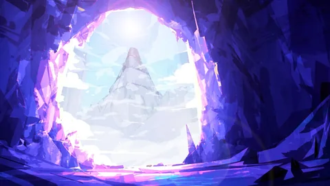
BackgroundFantasy CavernDigital ArtFanartFanart DracoDigital ArtYou keep the vision, we handle the workload. You create, we refine. You dream, we help you build it.
And every piece stays true to your style, your direction, and most importantly, your ownership.
Ready to bring your next project to life? Find us on Instagram at iluztar, or visit iluztar.com.